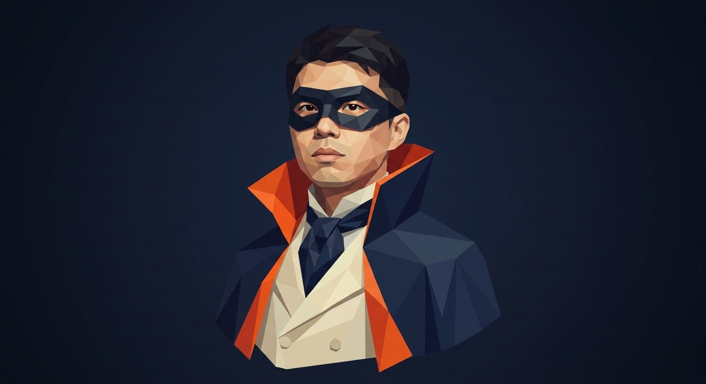
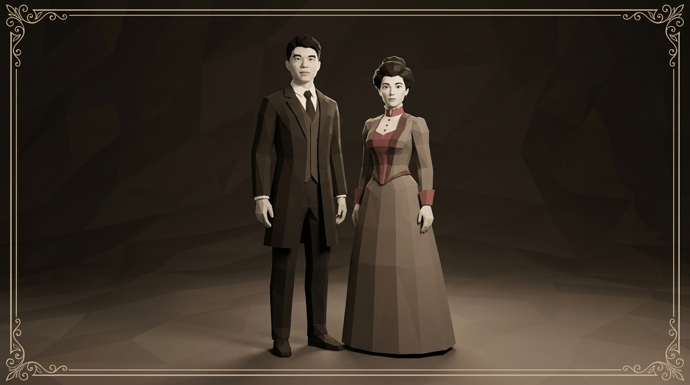
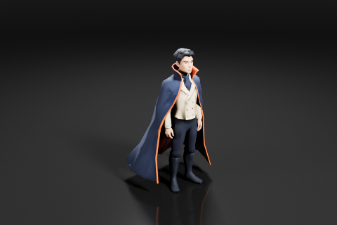
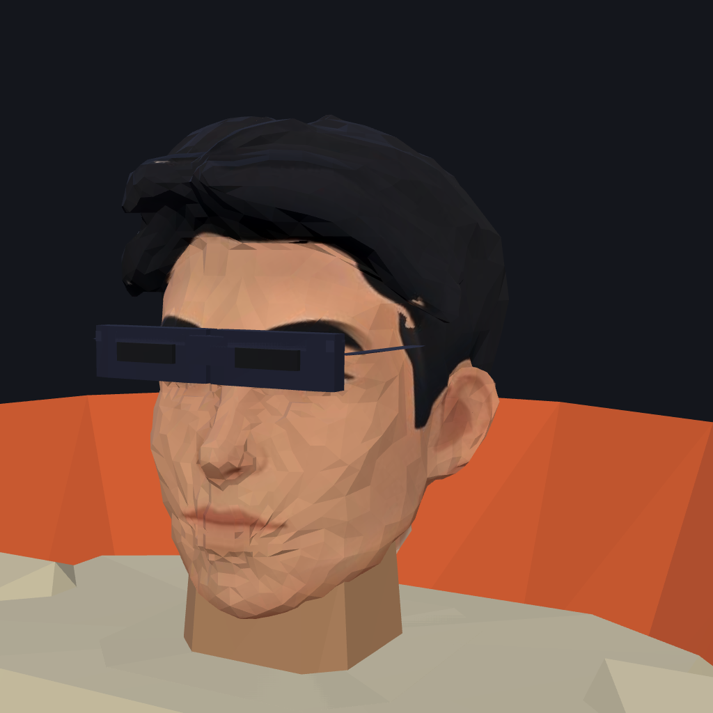
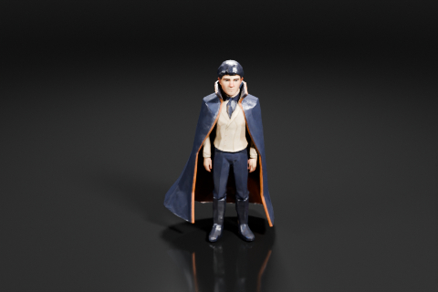

A new King of Bohemia, generated from a single supplied portrait via NB Pro image-to-image (gemini-3-pro-image) + Scenario image→3D (model_yvo3d-image-to-3d) — the product's own pipeline.


The same concept plate through two image→3D generators. In the viewer: Tripo 3.1 (tripo-v3-1-image-to-3d), smart low poly with a rebaked face texture — 19,622 triangles against the previous mesh's 100k.


